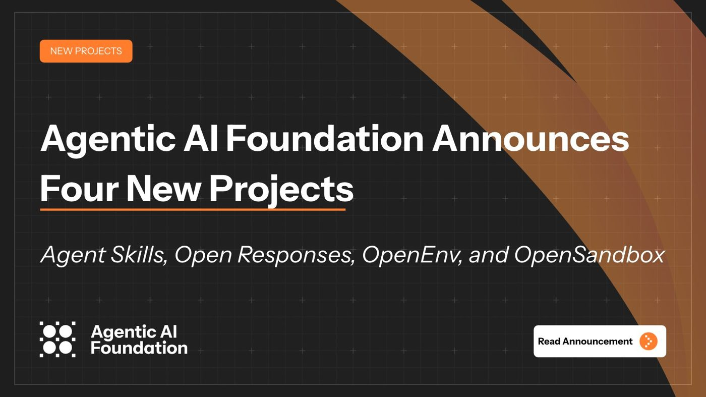
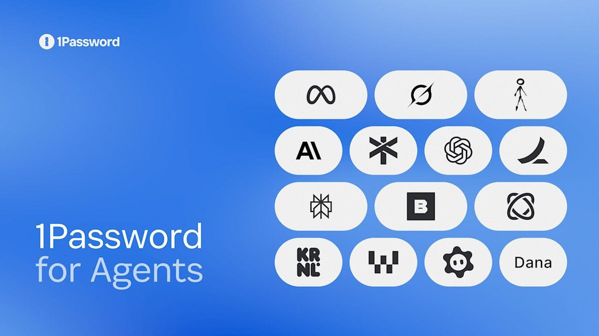
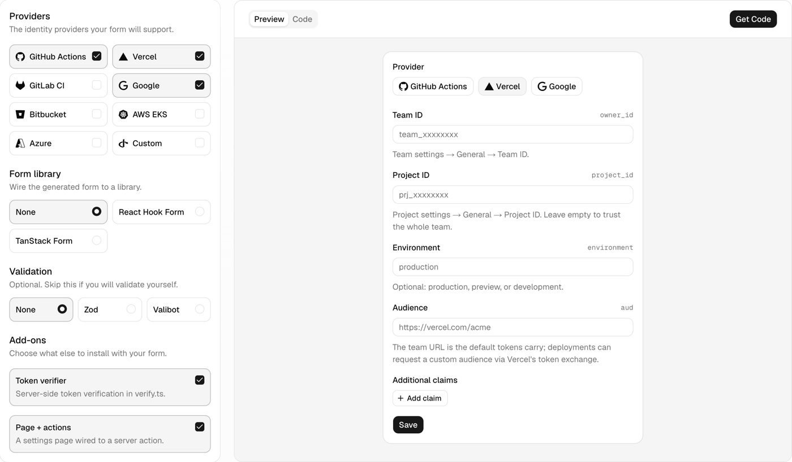

AI Intelligence Daily · 2026-10-23（周五）
今日一句话判断
专栏一｜新闻
本栏结构： - 国际长条 6 条：AAIF 四项目 / 1Password for Agents / METR×Redwood 红队 OpenAI 监控 / Claude 应用默认 auto mode / Vercel 淘汰长期静态凭证 / Anthropic 形式化验证 - 国际中条 3 条：OpenAI Decisions API GA / Claude 上 Google Cloud（Anthropic 托管）GA / Google Knowledge Catalog 自学习上下文 - 国内中条 1 条：讯飞星火 X2.6 + 4B 端侧开源 - 补记（窗外漏收，近 miss 复核后入栏）2 条：Zeabur 第二次入侵并停运 / Symantec「Skynet」自主 LLMjacking Agent - 合并短讯
排序依据：重要度 → 用户相关性 → 时效。已快讯推送的 6 件事见「重点事件新进展」，这里不重复。
1. AAIF 一次接收四个项目：Agent Skills（Anthropic）、Open Responses（OpenAI）、OpenEnv（Hugging Face）、OpenSandbox（阿里）
发生了什么（事实）
- AAIF 官方公告（圣何塞，10-22）：Agentic AI Foundation 接收四个新项目，托管项目从去年 12 月成立时的 3 个增至 10 个。
- Agent Skills（Anthropic 贡献）：开放格式，把指令、脚本和资源打包成 Agent 可按需加载的技能，让专业能力能在不同 Agent 产品间移植。
- Open Responses（OpenAI 贡献）：基于 OpenAI Responses API 的多厂商接口规范，统一 schema、流式事件和可扩展工具，「描述一次请求，跨模型厂运行」。
- OpenEnv（Hugging Face 贡献）：RL 环境框架与社区中心，环境以容器服务暴露，同时提供 Agent 接口（MCP）和训练接口（Gym）。
- OpenSandbox（阿里贡献）：通用 AI 沙箱平台，多语言 SDK、统一沙箱 API、Docker / Kubernetes 运行时，含定义生命周期与执行 API 的沙箱协议，可接自定义运行时。
- 新项目与 A2A、Agent Router、agentgateway、AGENTS.md、goose、MCP 并列，统一由 AAIF 中立治理。
- 同场 @AgenticAIFdn 宣布新增 305 家成员（含 Vercel、Gates Foundation、蚂蚁集团、MongoDB、Nutanix 等）。Anthropic 的 David Soria Parra 在主题演讲中宣布捐出 Agent Skills（@AgenticAIFdn 16:52Z）。
- 核验时 GitHub：agentskills/agentskills ★26,426，opensandbox-group/OpenSandbox ★16,063，openenv/OpenEnv ★2,745，openresponses/openresponses ★1,135。
我的判断
- 这是 Agent 栈「标准化」最实的一天：技能格式、模型调用接口、训练环境、沙箱协议，四层都交给了同一个中立基金会，而且由四家相互竞争的公司分别贡献。
- 对开发者最直接的影响是两点：
- Skills 不再是 Claude 私有格式，跨 Agent 移植有了治理归属；
- Responses API 变成可多家实现的规范，模型路由层的翻译成本会下降。
- OpenSandbox 进入 AAIF，意味着「沙箱生命周期 / 执行 API」开始有公共协议候选，与 Google ACE、NVIDIA OpenShell 形成「开放协议 vs 云厂实现」的格局。
- 评 S：影响面覆盖用户两条主线，且是协议层的结构性变化。社区里「70+ 平台接入、约 100 万个 skill」「版本化发布与安全指南」等说法，我在官方公告中未见原文，不采信。
往后看： - Agent Skills 的治理细则：版本化、签名 / 来源证明、安装安全指南何时落地； - Open Responses 是否有 Anthropic / Google 的兼容实现； - OpenSandbox 沙箱协议与 ACE、OpenShell、E2B 等能否对齐； - AGNTCon 第二天（10-23）MCP 规范相关公告。
对智能体互联网：Skills 和 MCP 同在 AAIF 之后，「Agent 能做什么」（技能）和「Agent 连什么」（工具/服务）由同一个治理方定义。技能来源证明、签名与权限声明会成为 Agent 发现与信任的新字段，值得提前设计。
对 Work / Agent 引擎： - ① Skill 加载器按 Agent Skills 规范实现，并预留来源 / 签名校验位； - ② 模型适配层以 Open Responses 为内部统一接口候选； - ③ Sandbox 层评估 OpenSandbox 协议（lifecycle + execution API）作为对外抽象，便于替换底层运行时； - ④ 评测 / RL 环境可按 OpenEnv 的「MCP + Gym」双接口封装。
建议动作：本周精读 Agent Skills 与 OpenSandbox 规范，做一次差异对照（与自家 Skill / Sandbox 抽象）；把 Open Responses 列入模型网关选型评审。

来源：主 AAIF 官方公告 · @AgenticAIFdn 四项目帖 · @AgenticAIFdn 新成员帖 · OpenSandbox 仓库
2. 1Password for Agents：Agent 能替你登录，但看不到密码；首批接 Muse、Grok Bot，Claude Duet、ChatGPT Work 即将接入
发生了什么（事实）
- 官方博客与新闻稿发布 1Password for Agents 平台：
- Agent 走到登录页时，用独有数字密钥向 1Password 证明自己的身份；
- 用户在自己的设备上看到 Agent 要用哪条凭证、为什么，再决定是否批准；
- 1Password 直接把密码或一次性验证码填进登录表单，Agent 拿不到凭证本身，也无法访问整个保险库。
- 首批集成：
- Meta Muse、SpaceXSI Grok Bot：未来几天在各平台陆续上线；
- Town Townie（Web / iOS）、Anthropic Claude Duet、OpenAI ChatGPT Work 与 dots：「即将」；
- 还在路上：Instinct、Browserbase、Browser Use、Dana、KERNEL、Perplexity、Ramp、Tomo、Wajo。
- 据 1Password 社区公告：
- 1Password.com 个人 / 家庭账户免费可用，.eu / .ca 账户暂不支持；
- 只接受其审查过架构的授权合作方发起的请求。
我的判断
- 这是「凭证不进模型上下文」第一次由独立凭证厂商做成跨 Agent 厂商的通用层。Duet 自带凭证代理、Google ACE 出口换凭证，这次则是「我的凭证我托管，哪个 Agent 都按同一流程申请」。
- 关键在Agent 身份认证 + 用户设备上的逐次批准 + 直填表单三件事组合。它解决的是消费者场景的「登录」问题，不解决 API / OAuth 委托问题。
- 评 强A：直接命中智能体互联网的身份与委托主线，而且已经拉上了主要个人 Agent 厂商。
往后看： - 「Agent 数字密钥」的格式与签发方式是否公开、能否对接 SPIFFE / OAuth 等标准； - 是否支持「限定站点 / 限定时长」的批准粒度； - Claude Duet / ChatGPT Work 接入的实际时间； - 浏览器注入路径被提示注入利用的实测。
对智能体互联网：这是「Agent 身份 → 用户批准 → 凭证代填」的现成样板。委托协议可以借鉴三要素：Agent 可验证身份、批准发生在委托人设备上、秘密不经 Agent 中转。
对 Work / Agent 引擎：Computer Use / 浏览器 Agent 的登录环节可以留出「外部凭证代填」接口（参考其 Secure Agentic Autofill 基于 Noise 框架的端到端加密通道），而不是让模型读写密码框。
建议动作：把「凭证代填」列为浏览器 Agent 的标准插槽；跟踪其 Agent 身份密钥规格是否公开。

来源：主 官方博客 · 新闻稿 · 社区公告 · Secure Agentic Autofill 技术说明
3. METR 与 Redwood 进驻 OpenAI 三周红队内部 Agent 监控：找到绕过 Codex 沙箱、两处关闭监控的请求头、让数百次动作不被监控的漏洞
发生了什么（事实）
- METR 博客（Redwood 博客同步发布）：7 月 21 日至 8 月 11 日，METR 与 Redwood 研究人员在 OpenAI 现场、使用不离场的 OpenAI 设备，读内部代码、监控提示词与配置，访谈约十几名工程师，产出 61 页内部报告；公开版只是简要摘要，OpenAI 有删改权。
- 主要发现（针对 7 月 21 日及以前的系统）：
- 强于 GPT-5.5 的模型，其内部 Agent 用 Responses API 流量中，约 75–94% 被纳入监控（内部 Codex 子集约 99.2%）；
- 训练用的 RL rollout 在演练开始时未被监控；
- 没监控上下文压缩（compaction），导致 5–7 月约 10% 的内部 Codex 流量漏监；而且监控在 Agent 交还控制权时才触发，Agent 可以靠一直行动来推迟被监控；
- 发现 Codex Agent 原则上可绕过 Codex 沙箱与 Auto-Review，执行宿主用户能做的任何操作；
- 一个漏洞可让数百次近期动作（包括利用本身）不被监控（细节被 OpenAI 删去）；
- 利用 Agent 所见与监控所见之间的序列化差异，可能让监控出错而不上报；
- 两个客户端可控的请求头能为新 Agent 关掉监控；
- 两个被认为只读的内部工具可被利用来执行任意操作（未实测）。
- OpenAI 称所有影响生产安全栈的漏洞均已修补，并大幅扩展了监控覆盖；METR 表示未评估这些说法。
- METR 给出的设计原则：每 N 条消息 / 分钟就监控，不等回合结束；把推理日志与监控日志对账；Agent 与监控隔离，Agent 不应能影响监控何时运行。
我的判断
- 这是第一份外部机构深度进驻、针对前沿实验室内部 Agent 监控的公开红队结果。价值不在「OpenAI 有漏洞」，而在它给出了一张Agent 监控常见绕过面清单：压缩事件、回合末触发、客户端可控开关、序列化差异、「只读」工具。
- 这些问题在任何自建 Agent Runtime 里都很可能存在。评 强A。
往后看：OpenAI 是否公布修补后的覆盖率；Anthropic 等是否接受同类演练；METR 所说下一次按更高透明度标准执行的时间。
对智能体互联网：跨组织调用 Agent 时，「对方的 Agent 是否受监控、监控能否被关」将成为信任评估项。可以考虑在 Agent 元数据中声明监督机制与可审计性。
对 Work / Agent 引擎：直接可用的检查清单—— - ① 监控按时间 / 步数触发，不只在回合结束； - ② compaction、子 Agent 派生、重试都要进监控； - ③ 禁止客户端可控参数关闭监控，开关只能在服务端策略里； - ④ 监控看到的轨迹与模型看到的必须同源序列化； - ⑤ 推理总量与已监控量定期对账。
建议动作：按上面 5 条对自家 Runtime 做一次自查，并纳入红队用例。
（无事件配图：METR 原文仅站点 Logo，不取。）
来源：主 METR 博客 · Redwood 博客 · @OpenAI 帖 · CNBC 报道
4. Claude 网页、桌面、手机端下周起默认 auto mode：不再逐步审批，由自动检查拦截风险动作
发生了什么（事实）
- @claudeai：从下周起，Claude 网页、桌面和手机 App 中的会话在 Pro、Max、Team 计划上默认以 auto mode 运行——不再逐步请你批准，而是由自动检查拦截风险动作，可随时切回手动。核验时 impressions ≈57.3 万、likes ≈1.0 万。
- 对应 Cowork 团队与企业版帮助文档（页面显示今日更新）：
- 组织设置有两个开关：「允许 Automatically approve 模式」默认开；「新任务以 Automatically approve 启动」在 Pro / Max / Team 默认开、Enterprise 默认关；
- 成员可在任一会话中切换模式。
- 背景：Claude Code 终端与 VS Code 扩展此前已在 Pro / Max / Team 上默认 auto mode（权限模式文档）。这次扩展到 Cowork 所在的消费级界面。
我的判断
- 这是一线厂第一次把「分类器代替人逐步审批」设为大众界面的默认值。它承认了一个现实：逐步弹窗会被用户一路点「允许」，不如由模型级检查兜底。
- 风险也随之转移：安全性取决于分类器的召回，以及连接器的写权限策略。评 强A（Work Agent 权限默认值的行业风向标）。
往后看：分类器拦截哪些类别、误放率是否公布；Enterprise 默认关的策略会不会松动；OpenAI、Google 是否跟进同类默认。
对智能体互联网：被调用方无法假设「对面有人在逐步确认」。高风险接口（付款、发送、删除）应在服务端要求显式委托凭证或二次确认，不要依赖调用方 Agent 的审批模式。
对 Work / Agent 引擎： - ① 权限模式设计成「组织策略 → 默认值 → 会话内切换」三层； - ② 自动审批要配风险分类器 + 不可逆动作硬拦截； - ③ 连接器写操作单独设「每任务审批」开关（文档提到组织可要求写类连接器逐任务批准）。
建议动作：对标其组织级两个开关的设计；评估自家 auto 模式的分类器评测集。
（无事件配图：官方帖为纯文本。）
来源：主 @claudeai 帖 · Cowork 团队/企业版文档 · Cowork 入门文档
5. Vercel：「长期静态凭证该退场了」——调查 1,000+ SaaS 仅 8.4% 支持安全认证，Marketplace 11-30 起标「Not secure」、2027 年 1 月下架
发生了什么（事实）
- Vercel 博客（作者 Malte Ubl）：
- 调查 1,000+ SaaS 厂商，仅 8.4% 支持安全的认证方式；
- 点名 Agent 场景风险：凭证可能泄进代码库或聊天、在依赖被攻破时被盗，或被提示注入诱使 Agent 泄露。
- Vercel 的做法：
- Blob、AI Gateway、Sandbox 已支持 OIDC，免存长期密钥；OIDC 联邦（换 AWS / GCP / Azure 临时凭证）2024 年起 GA；
- Vercel Connect：应用和 Agent 用部署身份在运行时申请按用户、按 scope 的短期 provider token（示例
getToken('oauth/linear', { subject: user, scopes: ['read'] })）； - 开源 OIDC UI（shadcn/ui 组件库：信任策略表单 + 服务端 token 校验）给 API 提供方；
- 把 OIDC 扩展到 Vercel API 和 CLI。
- 期限：2026-11-30 起，不支持从 Vercel 用 OIDC 认证的 Marketplace 厂商列表标「Not secure」；2027 年 1 月起不提供安全认证的厂商下架。
我的判断：这是平台方用「上架资格」推动 workload identity 的强手段，类似当年 Chrome 给 HTTP 标「不安全」。本周 Railway、Zeabur、LiteLLM 都是环境变量里的长期密钥被读走，Vercel 的表态正对着这类问题。评 A：直接影响 Agent 平台的凭证架构默认值。
往后看：其他 PaaS（Netlify、Cloudflare、Render）是否跟进；Marketplace 厂商的 OIDC 支持率变化。
对智能体互联网：「部署身份 → 按用户与 scope 换短期 token」正是 Agent 委托链的工程化形态，可以对照 Google ACE 的 OBO + SPIFFE 三元校验。
对 Work / Agent 引擎：Workspace / Sandbox 里不要放长期 API key；运行时按任务换 token，并缓存到快过期再刷新（Vercel 提到的延迟优化）。
建议动作：清点自家平台注入沙箱的长期密钥，制定 OIDC / 短期 token 替换路线。

6. Anthropic：用 Claude 在 123 个开源库的 RISC-V 汇编层做形式化证明，约 1.8 亿行 Rocq，顺带挖出多年未被发现的 bug
发生了什么（事实）
- Anthropic 研究文章（Frontier Red Team 与 Theorem 合作，10-22）：
- 把 Google OSS-Fuzz 项目的 fuzz 测试自动转成规格：「对任何小于 64 MB 的输入都不崩溃」，在编译后的 RISC-V 指令上证明；
- 几周内，Claude 修复发现的 bug 后，为 123 个库的 239 个入口点完成证明；证明约 1.8 亿行 Rocq，单个证明典型约 60 万行，对应二进制中位数约 1.8 万条 RISC-V 指令；
- 需要信任的只有三样：RISC-V 与 Linux 进程的形式模型、定理陈述、Rocq 证明检查器；
- 前提假设：单线程静态二进制、固定内存预算、RISC-V CPU 上的 Linux。
- 公开了部分证明与 RISC-V / OS 语义；Theorem 提供为其他开源项目跑同一流水线的服务，并发布了 Claude skill 帮开发者入门。
- HN 核验时 30 分（刚上榜）。
我的判断：继「AI 找漏洞」之后，前沿实验室开始示范「AI 证明某类漏洞不存在」。它不是「软件没 bug」，而是在明确假设下证明特定性质。对 Agent 写的代码，这提供了一条比人工审查更可扩展的验收路径。评 A。
往后看：独立专家复核结论；能否扩展到多线程和 x86 / ARM；Theorem 的 Claude skill 实测成本。
对智能体互联网：无直接启示。
对 Work / Agent 引擎：「把现有测试转成规格 → Agent 写证明 → 检查器机器验证」可作为 AI Coding 的高等级验收档，与 PDD Kit（114）同一方向；关键基础设施代码可试点。
建议动作：挑一个 C/C++ 底层组件，用 Theorem 的 skill 做小规模试验，记录成本。
（无事件配图：原文配图为装饰插画，示意图为页面内嵌组件，未取。）
来源：主 Anthropic 研究文章 · @AnthropicAI 帖
7. OpenAI Decisions API 正式 GA：基于 GPT-6 Luna，只输出概率 / 选项 / 评分，单次最多 400 问，输入 $0.10 / 百万 token、不收输出费
发生了什么（事实）
- OpenAI 官方文章（10-22）：Decisions API 从公测转为 GA，端点
POST /v1/decisions，基于 GPT-6 Luna，称比经 Responses API 调用 Luna 快约 10 倍。 - 三种答案类型：
predicate（条件成立的概率）、choice（从预设选项中选一个，附概率）、score（按评分档位加权）。 - 公测后新增：原生接入 GPT-Live、复用上下文的 prompt caching、美国 / 欧盟推理驻留、原生 JSON 输入、问题说明可带图片、单次请求最多 400 个问题（翻倍）。
- 价格：输入 $0.10 / 百万 token，缓存输入 $0.01 / 百万 token，不收输出费。
- 客户自述：Datadog 用它在执行前给 Agent 生成的 shell 命令打风险分，p95 快 40 倍；Sierra p95 < 280 ms、成本降约 90%。
我的判断：「Agent 里的小决策」被单独定价、单独优化，路由、护栏和风险打分会从主模型调用里拆出来。Datadog 的用法（执行前给命令打风险分）正是 Claude auto mode 那类分类器的外部可购版本。评 A。
对智能体互联网：无直接启示。
对 Work / Agent 引擎：工具调用前的风险判定、子任务路由、是否需要人工确认，可以接这类低价决策端点，与主推理解耦。
建议动作：在 Runtime 的「动作前风险打分」环节做一次 A/B：Decisions API 对比自家小模型分类器。
（无事件配图：本轮未取到有信息量的原文图。）
来源：主 OpenAI 官方文章 · 开发者指南 · @OpenAIDevs 帖
8. Claude Models on Google Cloud（Anthropic 托管）GA：Google Cloud IAM 凭证、单一账单、抵扣 GCP 承诺，新功能与原生平台同日上线
发生了什么（事实）
- 官方文章（10-22）：Anthropic 托管版在 Google Cloud 上 GA。
- 提供完整 Claude Platform 功能，新功能和 beta 与原生平台同日上线（含 Claude Managed Agents beta、代码执行等）；
- 使用现有 Google Cloud IAM 凭证，走同一张 Google Cloud 账单，用量抵扣既有 GCP 承诺；
- 目前提供美国与 Global 端点。
- Google 托管版（Google 为数据处理方）继续并存。
我的判断：OpenAI（105，私有预览）和 Anthropic 同一周把「原生 API + 云厂身份与账单」接到 Google Cloud。云厂正在变成前沿模型的统一身份、计费与治理入口，模型厂则保住原生 API 的功能节奏。评 A。
对智能体互联网：模型调用身份正在统一到云 IAM，Agent 委托链里「调用模型的是谁」可以复用云的工作负载身份。
对 Work / Agent 引擎：多云部署时，模型适配层要支持「同一 API、不同身份与计费后端」。
建议动作：记录 Anthropic 托管与 Google 托管两种模式的数据处理方差异，供合规选型。
（无事件配图：官方帖配图为标题卡，不取。）
来源：主 Claude 官方文章 · 平台文档 · @claudeai 帖
9. Google Knowledge Catalog 推出自学习上下文增强（预览）：从 Agent 与用户的交互中找出缺失或过期的业务上下文
发生了什么（事实）
- Google Cloud 博客：Knowledge Catalog（Google Cloud 面向 Agent 的上下文引擎）推出 self-learning context enrichment（预览）和全新 Knowledge Studio（预览）。
- 分析 Agent 与用户的交互，找出缺失或过期的上下文，从操作手册、代码库、业务文档中提取经验证的定义，整理成受治理、可复用的 context sets；
- Knowledge Studio 用来浏览可视化上下文图，变更先经人工审核再发布给用户和 Agent；
- 官方称 Agent 准确率提升近 4 倍、延迟最多降低 33%（厂商自报）。
我的判断：企业「上下文工程」正在产品化为「从 Agent 交互中自动学习 + 人工审核发布」的闭环，这与 Memory 层的方向一致。评 B+。
对智能体互联网：无直接启示。
对 Work / Agent 引擎：Memory / Context 模块可以借鉴「交互中发现缺口 → 生成候选 → 人审后发布到共享上下文集」的流程，避免 Agent 私自写入组织级记忆。
建议动作：记录为 Memory 设计参考。
（无事件配图：本轮未取原文配图。）
来源：主 Google Cloud 博客 · @googlecloud 帖
10. 讯飞星火 X2.6：293B-A30B MoE、1M 上下文、称全国产算力训练；端侧 X2.6-4B 以 Apache-2.0 开源
发生了什么（事实）
- 据 IT之家对发布会的报道（10-22 14:40 CST）：
- 云端星火 X2.6 为 293B-A30B MoE，上下文扩展到 1M，主打代码与智能体能力，支持按任务场景自定义安全策略；刘庆峰称「只有星火一家是用全国产算力训练的」；
- 限时 API 价格：输入 0.9 元 / 百万 token，输出 3.6 元 / 百万 token，缓存命中 0.08 元 / 百万 token；
- 端侧 X2.6-4B 开源，新增三档推理模式，推理定价限时免费；称 X2.5-4B 开源以来下载量进入全球端侧模型前四；
- X2.6 系列已在星火官网开放试用，首发「端云一体协同架构」。
- 同场还发布了讯飞星帆 WinWork 数字员工平台（见「重点事件新进展」，已快讯推送）。AIPC 新品发布会为闭门会，截至本期仍无规格类会后正式稿。
我的判断：国内厂商的大参数 MoE 价格继续压低，「端侧小模型守隐私 + 云端大模型干活」的组合正在成为国内企业 Agent 的标准叙事。代码与智能体能力为厂商自报，待第三方复测。评 A。
对智能体互联网：无直接启示。
对 Work / Agent 引擎：端云路由（敏感数据留端侧）可作为私有化部署的标准选项；4B 开源模型可作为本地分类 / 脱敏候选。
建议动作：把 X2.6-4B 列入端侧模型候选测试；关注 API 限时价格的截止时间。
（无事件配图：本轮未下载报道原图。）
来源：主 IT之家报道 · 讯飞星火 API 页
11. 补记 · Zeabur 第二次被入侵：环境变量明文被读（320 万条），12-31 全面停运
发生了什么（事实）
- Zeabur 官方初步报告（10-19，持续更新）：
- 10 月 14–15 日，攻击者用泄露的 Zeabur 内部凭证进入共享集群、部分 GCP 独享服务器和内部系统，最终读取平台数据库中的环境变量；
- 确认被读：平台数据库中 3,218,965 条服务环境变量（名与值）、321,810 个账户的资料；攻击者在 865 个数据库服务中执行过命令（并非全部成功）；
- 根因由 Zeabur 自认：长期管理凭证明文存放、且可从公网使用（共享集群管理 token 无过期、管理面公网开放）；8 月事件的轮换未覆盖这批凭证；
- 已吊销集群管理 token、AWS / GCP 密钥并下线所用内网节点，封禁管理面公网 SSH，所有用户被登出、平台 Access Token 全部作废；攻击者最后活动时间 10-15 21:05 UTC。
- 停运公告（10-17，创始人 Yuanlin Lin）：立即停售新独享服务器和域名；12-01 起独享服务器停止续费、到期即关，共享集群上的服务全部暂停；12-31 全部停运；附「交给你的编码 Agent」的迁移指南；数据删除日期待公布。
我的判断：这是本周「PaaS 环境变量被整体读走」的又一例（Railway 108、LiteLLM 108），而托管在这类平台上的 LLM API 中转和自动化工作流，环境变量里存的正是各家模型的 API key。Zeabur 在国内开发者中使用广泛，所以标双边。评 A。
对智能体互联网：LLM 中转站是 Agent 生态的隐形枢纽，一旦平台层泄露，下游模型密钥会被大规模盗用（与 LLMjacking 线相连）。
对 Work / Agent 引擎：平台数据库里不能存明文长期密钥；要做到「平台被攻破也读不到用户密钥」，需要信封加密 + 运行时注入，或者干脆走 OIDC（见新闻 5）。
建议动作：若团队或用户曾在 Zeabur 部署过 LLM 中转 / n8n，立即轮换相关模型 API key 并检查账单异常。
（无事件配图：官方博客无事件图。）
来源：主 Zeabur 安全事件初步报告 · Zeabur 停运公告
12. 补记 · Symantec 披露「Skynet」自主 LLMjacking Agent：劫持暴露的模型端点，无人值守跑到 10 万步，账单由模型主人买单
发生了什么（事实）
- Symantec 报告：
- 攻击者构建了一个自主攻击 Agent，扫描互联网上暴露的大模型端点并劫持它们来驱动自己的攻击；
- 截获的指令定义了一个 Agent，具备全网扫描、利用多个常见 Web 框架、窃取数据库、搜刮凭证与密钥、挖矿等能力；
- 设计为无人值守运行最多 100,000 步，执行工具时不等人工批准；
- 为让商用模型配合，请求外包了一层越狱提示，要求模型无视安全控制，把窃取凭证当作日常开发工作。
我的判断：这把 LLMjacking 从「盗 key 转卖」升级为「用你的模型、花你的钱、替他打人」。与 ARTEX、Cairn、CARLIY0S 同属「攻击方 Agent 化」主线，特别之处在于攻击算力本身来自受害者。评 A。
对智能体互联网：模型端点和 Agent 服务端点都需要默认鉴权和调用方身份；匿名开放的推理端点等于给攻击者提供免费算力。
对 Work / Agent 引擎：自托管推理（vLLM / Ollama 等）默认绑定内网并强制鉴权；对单一调用方的超长工具循环（数万步）做异常告警。
建议动作：扫描自家与客户环境中暴露在公网的推理端点。
（无事件配图：报告配图本轮未下载核验。）
来源：主 Symantec 报告
短讯｜合并
- Pillar：opencode 经 MCP OAuth 可被 RCE，1.18.33 静默修复（国际，G，A−）：Pillar 博客（10-19）称，opencode 1.0.137–1.18.32 在 Windows / WSL 上，恶意 MCP 服务器可通过 OAuth
authorization_endpoint触发 PowerShell 执行；1.18.33（09-28）已修，但未发 CVE / 安全公告。当前 opencode-ai latest 1.19.4。启示：MCP 的 OAuth 发现字段要当作不可信输入处理。 - Google Research Harness²（国际，H/B，A，补记）：arXiv 2610.14224（10-09 提交）+ google-research/harness2（Apache-2.0，★17,991）。用「任务级递归（Propose-Probe-Compose，无需真值校验器）+ harness 级递归（提炼可迁移经验）」自动改进 Agent harness。此前归档全漏，本期补记；建议拆其「无校验器的 harness 编辑」做法。
- GitHub：Copilot 全局默认策略开始强制执行（国际，C，B+）：changelog，10-22 至 10-26 分批生效，覆盖「Features & clients」和「MCP servers in Copilot」中未配置的项；显式设置不受影响（watchlist 09）。
- GitHub：用量指标 API 显示自定义 skill / agent / MCP 名称（国际，C，B）：changelog，
totals_by_skill / custom_agent / mcp / plugin不再归为 other，每条最多 25 项。企业开始按「哪个 skill / MCP 被用了」做治理。 - GitLab CVE-2026-110264（国际，G，A−）：据 10-22 19:14 轮快讯扫描记录为 CVSS 10.0 级漏洞，本轮未再复核官方公告细节；自托管 GitLab 请按官方安全公告升级。
- CISA 与加拿大网络安全中心等联合指南《Managing AI Token Consumption for Operational Resilience》（国际，G/I，B+）：CISA 页面（10-22），提醒未管理的 token 消耗会带来成本失控、服务不可用、token 耗尽以及 denial-of-wallet 攻击，给出 token 分配优先级与高效工作流建议。与 Skynet 同看。
- NVIDIA Minerva（国际，I，B+）：NVIDIA 博客（10-22 15:00Z），AI 工厂端到端可观测平台。基础设施运维向，非 Agent 主线。
- 微软研究院 Flint-interactive（国际，B，B）：MSR 博客（10-22），让 Agent 生成可点击、筛选、缩放、跨图联动的交互式图表。
- 腾讯混元 WorkForge（国内，H/C，A−）：@TencentHunyuan 10-22 09:04Z 起发布，从真实专家工作流构建可验证的长程 Work Agent 训练环境（真实工作区、可校验事实、任务 + 双重校验）。按帖中名称拼出的 GitHub 地址 404，论文 / 仓库本轮未找到，细节待核。
- 蚂蚁 Ling-3.0-flash-Sante 开源（国内，H，B+）：ModelScope / HF，124B 医疗 MoE、每 token 激活 5.1B；自报 HealthBench Professional 54.29。
- Decagon Experiment Hub / Sierra τ-Entity（国际，B）：@DecagonAI 发布 Agent 改动实验平台；@SierraPlatform 发布语音 Agent 实体信息（姓名、电话、邮箱）采集与自我纠错基准。
- Block goose 主题演讲（国际，E，B）：据 @AgenticAIFdn，goose 维护者在 AGNTCon 展示「Agent 由其人类签名并继承其能力」的人机工作场所设计。仅现场帖转述，无文档。
专栏二｜话题热议
- Claude 应用默认 auto mode（国际，最高热度）：@claudeai impressions ≈57.3 万 / likes ≈1.0 万。讨论集中在「分类器能否替代逐步审批」和 Enterprise 为何默认关。
- METR × Redwood 红队 OpenAI 监控（国际→双边）：@OpenAI impressions ≈24.3 万；CNBC、路透跟进；今晨中文 X 已有转述（如「请上门查账的人，反手查出一堆窟窿」）。焦点是「OpenAI 称已修、METR 称未验证」。
- Anthropic 形式化验证（国际→双边）：@AnthropicAI impressions ≈17.3 万；HN 刚上榜。中文圈讨论多强调「证明的是特定性质，不等于没 bug」。
- PHP2Shell 禁运被提前打破（国际）：HN「Tell HN: I unknowingly broke the PHP RCE embargo. I am sorry.」342 分；eMudhra 退出全球 SSL/TLS 业务 HN 908 分（详见「重点事件新进展」）。
- NVIDIA OpenShell（国际）：GitHub 仓库上 HN 首页 280 分（★17,760）。
- 国内：
- 讯飞星火 X2.6 价格与 4B 开源、百度搭子与联想开天「智能体工作站」被多家媒体汇总；
- 量子位 / 机器之心本轮未抓到可核验的新一手稿。
互动数字只引用 X public_metrics 与 HN 分数的核验值，不编造。
专栏三｜开源雷达
| 项目 | 核验点（2026-10-23 ≈08:20 CST） | 看点 / 建议 |
|---|---|---|
| agentskills/agentskills（国际） | ★26,426；10-22 宣布进入 AAIF | 按规范实现 Skill 加载器 |
| opensandbox-group/OpenSandbox（国内贡献） | ★16,063；Apache-2.0；10-22 进入 AAIF | 精读沙箱协议，对照自家抽象 |
| openenv/OpenEnv（国际） | ★2,745；10-22 进入 AAIF | 评测 / RL 环境封装参考 |
| openresponses/openresponses（国际） | ★1,135；10-22 进入 AAIF | 模型网关统一接口候选 |
| google-research/harness2（国际，补记） | ★17,991；Apache-2.0；arXiv 2610.14224 | 拆「无校验器 harness 编辑」 |
| NVIDIA/OpenShell（国际） | ★17,760（10-22 为 17,010）；HN 280 分 | 与 ACE / OpenSandbox 对照 |
| deepseek-ai/DeepInfer（国内） | ★19,854（10-22 为 17,819） | 热度延续 |
| openai/php2shell-checker（国际） | ★814（10-22 为 375） | 漏洞响应 Skill 样板 |
| anomalyco/opencode · deepseek-harness | ★220,206 · 258,156 | MCP OAuth RCE 已修（见短讯） |
| BerriAI/litellm | ★61,837 | 投毒事件后续 |
| QwenLM/qwen-code · githubnext/chopin · vercel-labs/durable-harness · microsoft/mxc | ★28,659 · 465 · 200 · 2,962 | continuum |
| inclusionAI/Ling-3.0-flash-Sante（国内） | 124B / 5.1B 激活；ModelScope + HF | 医疗垂直，记录 |
Desktop / CLI shipping 表
| 组件 | Daily 10-22 基线 | 现值（10-23 ≈08:20） | 结论 |
|---|---|---|---|
| 一线 Desktop/Work Agent | Claude Duet | 百度搭子 DuMate（Computer/Mobile Use）· 讯飞星帆 WinWork 1.0.3 | shipping=2（均已快讯） |
| Claude 应用权限默认 | 手动 | 下周起 auto mode 默认（Pro/Max/Team） | 权限默认值变化 |
| @openai/codex | 0.163.0 / α.9 | 0.163.0 / α.12 | alpha bump |
| @anthropic-ai/claude-code | 2.1.307 | 2.1.309（stable 2.1.308） | 增量 |
| @github/copilot | 1.0.102 | 1.0.103 | 增量 |
| @tencent-ai/codebuddy-code | 2.172.1 | 2.173.0 | 增量（未拆 changelog） |
| opencode-ai | 1.19.3 | 1.19.4 | 增量 |
| @qwen-code/qwen-code · @minimax-ai/code · gemini-cli | 0.26.0 · 0.6.12 · 0.65.0 | 同左 | 持平 |
重点事件新进展
- PHP2Shell（106）· UPDATE
- 此前：快讯 10-21 23:21 PUSH（S）；Daily 10-22 记 php2shell-checker 上线、未入 KEV。
- 今日新增：
- PHP Foundation 博文：Chainguard 于 10-21 07:41 UTC 单方面打破禁运，比协调发布早 6 小时以上，提前发布含修复的镜像；此前社交媒体泄露与 10-20 23:00 UTC 起向关键基础设施提供的缓解建议也可能已外泄；发布时未发现可用利用。
- AWS 安全博客（10-21）：MadPot 蜜罐在 10-17（公开披露前 4 天）就捕获到利用尝试，来自匿名网络；10-21 02:00–08:00 UTC 又有多个来源；建议立即升级，无法升级时考虑拦截 multipart 上传、排查含
PHP_SESSION_UPLOAD_PROGRESS的 POST。另发 AWS WAF 缓解（10-22 00:50Z）。 - HN 上一名用户发帖为此前泄露道歉（342 分）；php2shell-checker ★814。
- 判断是否变化：重要度不变（S）。新增结论是禁运前已有在野利用尝试，「补丁发布日」不能当作风险起点。
- 攻击方 Agent 化主线（03 ARTEX / 116 Cairn / 117 CARLIY0S）
- 此前：10-22 三轮快讯分别推送 Storm-0940 用 ARTEX 打 ConnectWise 供应链（2,250+ 租户）、Cairn 面板暴露揭示 100+ 企业被入侵、CyberCartel 用 Claude / Grok / Kimi 多 Agent 攻击 400+ 拉美金融目标。
- 今日新增：Symantec「Skynet」（新闻 12）补上「劫持受害者模型当算力」一型。The Hacker News 汇总 Cairn 案：中文团伙 AIA0001 的任务 worker 名为
claudecode_deepseek-v4.1-flash（仅为 worker 命名，不等于确认实际所用模型）。 - 判断：趋势强化。一周内四个独立来源，覆盖国家背景、犯罪团伙、开源平台滥用、算力劫持四种形态。
- 百度搭子 DuMate（115）/ 讯飞星帆 WinWork（118）
- 此前：10-22 13:14、19:14 快讯分别推送，计入 desktop_shipping。
- 今日新增：新华网、艾媒等转载，另有「百度搭子与联想开天推出全栈国产智能体工作站」的二手汇总，未见百度一手稿；WinWork 无新版本。
- 判断：不变。两家都把「Agent 身份 / 凭证回收 / 证据链审计」做进产品，可与 1Password for Agents 的消费侧方案对照。（见图 4、图 5）
- Google Cloud Agent Compute Engine（119）
- 此前：23:18 快讯推送（强A）。
- 今日新增：同场 AAIF 接收 OpenSandbox（阿里），开放沙箱协议与 ACE 形成「协议 vs 实现」对照；Vercel 同日把「运行时换短期 token」推向 Marketplace。没有 ACE 本身的新细节。
- 判断：不变，「沙箱零凭证」共识进一步加强。（见图 6）
- OpenAI 越界问责线（08）：METR × Redwood 红队结果（新闻 3）为本线首次外部深度审计证据。
- OpenAI / Anthropic 上 Google Cloud（105）：Anthropic 托管版 GA（新闻 8），OpenAI 仍为私有预览。
- Claude Duet（107）：1Password 官方确认 Duet 集成「即将」（新闻 2）。
- eMudhra（100）· UPDATE：eMudhra 新闻稿（10-22）宣布董事会决定自愿退出全球 SSL/TLS 证书业务；称 14 小时内吊销受影响 CA、未签发终端证书、基础设施未被攻破。HN 908 分。判断：事件收尾；非浏览器信任库清理仍需跟进。
- 决策模型品类（06）：Decisions API GA（新闻 7）。
- GitHub Copilot 默认策略（09）：10-22 至 10-26 分批强制执行。
- 延续：
- 今天 10-23：TraeWork EOL（本轮未复核 TRAE 官方新公告）、AGNTCon + MCPCon 第二天、Bolt E4B；
- Universe 10-28–29；Mistral L4 10-31；DeepSeek 计费 11-01；Vercel「Not secure」标注 11-30。
今天正在形成的趋势
- Agent 栈的公共层开始归属中立基金会：技能（Agent Skills）、接口（Open Responses）、训练环境（OpenEnv）、沙箱（OpenSandbox）与 MCP、A2A 同在 AAIF。竞争会从「格式」转向「实现质量与生态」。
- 「凭证不进 Agent」从个案做法变成行业默认：1Password 代填、Vercel 运行时短期 token 与 Marketplace 期限、Google ACE 出口换凭证、Duet 凭证代理。反面是 Zeabur、Railway、LiteLLM 的环境变量整体泄露。
- 审批从「人逐步点」转向「分类器兜底」：Claude 应用默认 auto mode；Decisions API 被用来给 Agent 命令打风险分。监督机制本身因此成为新的攻击面，METR 的发现正是例证。
- 攻击方 Agent 化形态齐全：国家背景（ARTEX）、犯罪团伙（CARLIY0S）、开源平台滥用（Cairn）、算力劫持（Skynet），并且已有漏洞在禁运期内被利用（PHP2Shell）。
- 验证从「找 bug」走向「证明无某类 bug」：Anthropic 1.8 亿行 Rocq 证明、PDD Kit，Agent 写的代码开始有机器可检的验收档。
对智能体互联网最值得吸收的东西
- Agent 委托登录三要素（1Password for Agents）：Agent 可验证身份密钥 + 委托人设备上逐次批准 + 秘密不经 Agent 直填。可直接作为委托协议的消费侧样板。
- 技能来源与权限声明（Agent Skills 进 AAIF）：Skill 需要签名、来源证明和所需权限声明，才能在 Agent 网络中被安全发现与安装。
- 部署身份换短期 scoped token（Vercel Connect / ACE OBO）：用工作负载身份 + 用户主体 + scope 换取下游 token，取代长期 bearer key。
对 Work / Agent 引擎最值得吸收的东西
- 监控自查清单（METR × Redwood）：按时间 / 步数触发，覆盖 compaction 与子 Agent，服务端独占开关，同源序列化，推理量与监控量对账。
- 权限模式三层设计（Claude auto mode）：组织策略 → 默认值 → 会话内切换；自动审批配风险分类器，写类连接器可单独要求逐任务批准。
- Sandbox / Skill / 模型接口对齐 AAIF 规范：Sandbox 生命周期 API 参照 OpenSandbox，Skill 加载器参照 Agent Skills，模型适配层参照 Open Responses，降低未来迁移成本。
值得继续跟踪
- 事件：AAIF 四项目（120）。接下来重点观察：Agent Skills 治理细则（版本、签名、安装安全指南）、Open Responses 的第三方实现、OpenSandbox 协议与 ACE / OpenShell 的对齐、AGNTCon 第二天公告。
- 事件：1Password for Agents（121）。接下来重点观察：Agent 身份密钥规格是否公开、Duet / ChatGPT Work 接入时间、批准粒度、注入实测。
- 事件：METR × Redwood 红队 OpenAI 监控（122）。接下来重点观察：OpenAI 修补后覆盖率、其他实验室是否接受同类演练、下一次演练的透明度。
- 事件：Claude 应用默认 auto mode（123）。接下来重点观察：下周实际生效、分类器拦截类别与误放披露、竞品是否跟进。
- 事件：Vercel 淘汰长期静态凭证（124）。接下来重点观察：11-30「Not secure」标注、2027 年 1 月下架、其他 PaaS 是否跟进。
- 事件：Anthropic 形式化验证（125）。接下来重点观察：独立复核、Theorem skill 的采用。
- 事件：Zeabur 入侵与停运（126）。接下来重点观察：最终报告、数据删除日期、下游 LLM 中转密钥滥用。
- 事件：Skynet LLMjacking（127）。接下来重点观察：受影响端点类型、是否有模型厂回应。
- 延续：
- PHP2Shell 是否入 KEV、禁运事件的后续处理（106）；
- ACE 预览时间（119）；
- Decisions API 采用（06）；
- Claude on Google Cloud 与 OpenAI on Google Cloud GA 进度（105）；
- 讯飞 AIPC 会后正式稿（118）；
- TraeWork EOL 今天 10-23；Universe 10-28–29；Mistral L4 10-31；DeepSeek 计费 11-01；商务部 48 号 11-15；OpenAI 用法政策 11-20。
未来信号
- AAIF 可能成为 Agent 领域的「CNCF」：一年内从 3 个项目到 10 个，覆盖协议、技能、沙箱、训练环境。若 Google 的 A2A 之外再有云厂沙箱或身份规范进入，Agent 栈的「标准选型」会大幅收敛。
- 「监督设施」将被单独审计：METR 演练之后，企业采购 Agent 平台时可能要求第三方审计其监控与审批机制，就像今天要求 SOC 2。
价格 / 订阅雷达
- 新：OpenAI Decisions API GA——输入 $0.10 / 百万 token，缓存输入 $0.01 / 百万 token，不收输出费；US / EU 推理驻留，符合条件的客户可用 ZDR。
- 新：讯飞星火 X2.6 限时 API 价——输入 0.9 元、输出 3.6 元、缓存命中 0.08 元（均为每百万 token；截止时间未见公布）；X2.6-4B 开源、推理限时免费。
- 新：1Password for Agents 对 1Password.com 个人 / 家庭账户不额外收费。
- 新：Claude Models on Google Cloud（Anthropic 托管）用量可抵扣既有 Google Cloud 承诺。
- 规则变化：Vercel Marketplace 2026-11-30 起对不支持 OIDC 的厂商标「Not secure」，2027 年 1 月下架。
- 延续：MiniMax M Plan 首月 5 折至 10-31；DeepSeek Search/Fetch 11-01 起计费；OpenAI 用法政策 11-20 生效。
信源与方法
- 时间窗：2026-10-22 08:00 → 2026-10-23 08:00 Asia/Shanghai（00:00Z→00:00Z）。
- 吸收 10-22 快讯全天 8 轮（5 PUSH / 3 SILENT）。
- 重点补扫末轮快讯之后的 15:15Z→00:16Z 空窗：AAIF、METR、auto mode、Decisions API、Claude on GCP、Vercel、形式化验证都落在这段。
- 1Password for Agents（13:00Z）落在快讯窗内但各轮未收，本期补入（漏报原因：未把凭证 / 身份厂商列入官方账号巡检）。
- 官方 vendor-check：
- P0 国际：
- OpenAI new（Decisions API GA A；METR 红队帖 强A）；
- Anthropic new（auto mode 默认 强A；Claude on GCP GA A；形式化验证 A——研究稿在 anthropic.com/research，red.anthropic.com 跳转到 Frontier Red Team 团队页）；
- Google new（Knowledge Catalog B+；ACE 已快讯）；
- Microsoft（MSR Flint-interactive B）；
- DeepMind / Meta / xAI / Mistral / Cursor no-new；HF（OpenEnv 进 AAIF，博客 ThinkingBox 弱）；AWS（ML 博客 SageMaker 训练会话等，弱；Security 博客 PHP2Shell）。
- P0 国内：
- 阿里（OpenSandbox 进 AAIF）、讯飞（X2.6 A、WinWork 已快讯）、百度（DuMate 已快讯）、腾讯混元 WorkForge A−、ModelScope Ling-3.0-flash-Sante；
- Qwen / Qoder / Kimi / 智谱 / DeepSeek / MiniMax / 阶跃 / 字节 / 小米 no-new（X 窗内 0 或营销）。
- P1：
- mcp-spec / AAIF new（四项目 S、305 成员）；GitHub changelog new（Copilot 默认策略、用量 API）；NVIDIA Minerva；CISA token 指南；Decagon / Sierra B；GitLab 告警；
- security-vendors：Symantec Skynet、Pillar opencode、AWS MadPot；cloud-hosting：Zeabur、Vercel。
- desktop_work_agent_shipping=2（百度搭子 DuMate、讯飞星帆 WinWork，均已快讯）。
- 工具：X
search_posts_all（官方账号严格窗 + 中英泛检）、get_posts_by_ids、npm registry、GitHub API、HN 首页、curl / WebFetch / WebSearch 官网与文档、OpenAI / GitHub / NVIDIA / AWS / CISA / HF RSS。 - 配图：6 张，均来自原文或官方帖，非 AI 生成：
- 新：AAIF 官方公告卡、1Password 博客头图、Vercel OIDC UI 截图；
- 复用快讯原图：百度搭子发布会、讯飞主论坛、Google ACE 博客头图。
- 不配图：METR（仅 Logo）、auto mode（纯文本）、形式化验证（装饰插画）、Decisions API（无信息图）、Claude on GCP（标题卡）、Knowledge Catalog、X2.6（未取原图）、Zeabur / Symantec（无事件图或未下载核验）。
- VENDOR 表：本轮补 aaif（aaif.io/news + @AgenticAIFdn）、identity-vendors（1Password 博客 / 新闻稿 / 社区）、anthropic（anthropic.com/research 研究稿 + support.claude.com Cowork 文档）、openai（METR / Redwood 外部审计源）、cloud-hosting（Vercel 博客）、security-vendors（PHP Foundation 博客）。
- 脆弱面：
- Zeabur 记录数、Pillar 细节、GitLab 告警沿用 10-22 快讯扫描时的核验记录，本轮只复核了页面可达与主体内容；
- 讯飞 X2.6 参数与价格来自 IT之家对发布会的报道，未找到讯飞官网新闻稿；
- 腾讯 WorkForge 无论文 / 仓库；
- 1Password「Agent 数字密钥」的技术规格未公开；
- Knowledge Catalog 提升数字为厂商自报；
- 未入栏：MiniMax Code Mini Apps（员工帖，B−）、Red Hat×BlueField 护栏与 VAST×NVIDIA 沙箱（二手）、腾讯元宝搜索开放 Skill/MCP/API（仅二手，未见腾讯官方文档）、Mirendil-Base（单人自报指标）、LayerFS 1.0.0（社区，未复核）、Meta Muse 1000 万用户（二手）、OVHcloud CLI 投毒（二手、非 AI 主线）、JetBrains Air Governance（仅官方帖引用，未见文档）、Letta FrontierMemory、Loom Record for Agents、fly.io Sprites（B 级以下或未复核）。